Introduction Data Mining et Web Intelligence
Paris Dauphine - PSL
Web Data Mining & Business Intelligence (M2 Marketing Digital, 18h, 3 ECTS)
Objectif global :
| Date | Horaire | Durée | Séance | Thème (proposition) |
|---|---|---|---|---|
| Lundi 10/11/2025 | 13h – 17h | 4h | Séance 1 | Intro Web Data Mining & BI |
| Mercredi 19/11/2025 | 13h – 17h | 4h | Séance 2 | Visualisation de données & storytelling |
| Lundi 24/11/2025 | 13h – 17h | 4h | Séance 3 | Réductions, régressions, classifications… |
| Lundi 01/12/2025 | 9h – 12h | 3h | Séance 4 | Comprendre et utiliser les données géographiques |
| Vendredi 05/12/2025 | 9h – 12h | 3h | Séance 5 | Analyses de réseaux |
Projet final
À faire
Livrable
Partie 1 : Introduction
L’analogie de Salganik
“Les chercheurs en sciences sociales sont en train de vivre une transition similaire à celle de la photographie vers la cinématographie.” (Salganik 2019, 5)
Le Data Mining n’est pas un domaine isolé, il se situe à l’intersection de plusieurs disciplines :
Pour le Marketing
Le développement du CRM (Gestion de la Relation Client) a été un moteur majeur : on est passé d’un marketing “produit” à un marketing “client” (fidélisation, attrition, scoring).
On peut classer les méthodes en deux grandes familles :
Décrire ce qui s’est passé (sans a priori).
Prédire ce qui va se passer (en apprenant du passé).
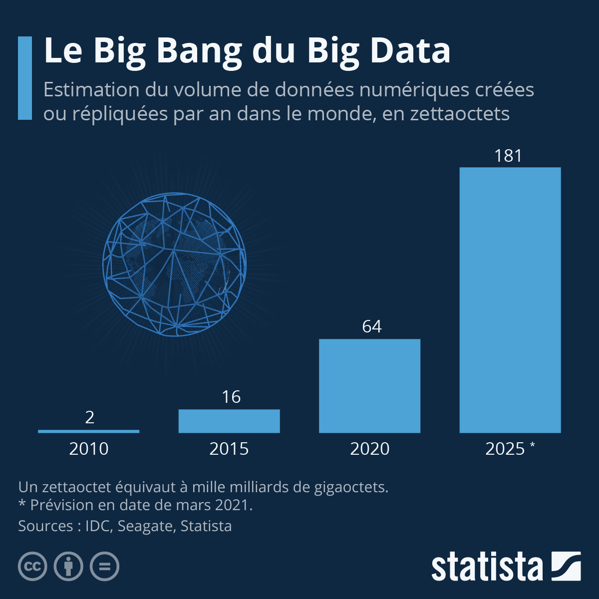
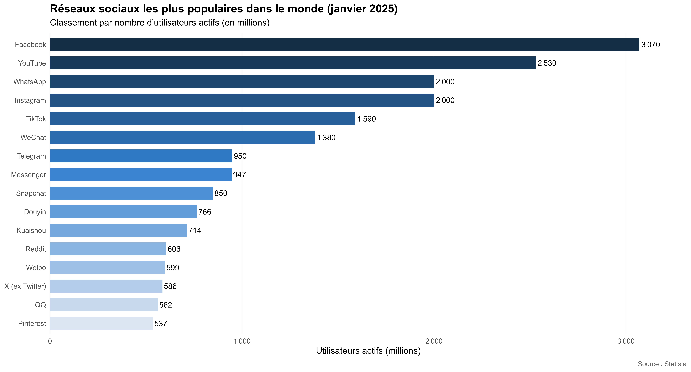
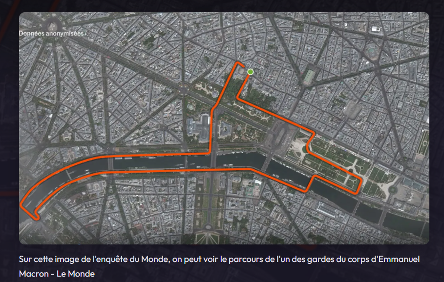
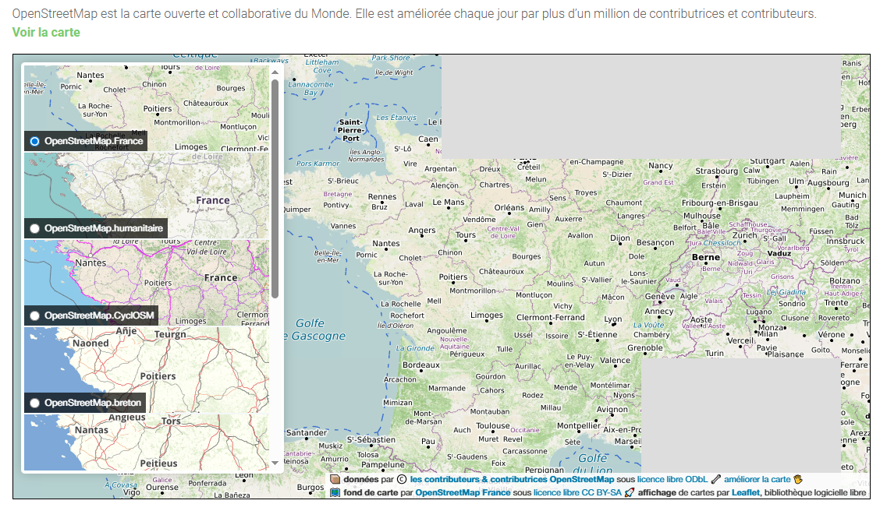
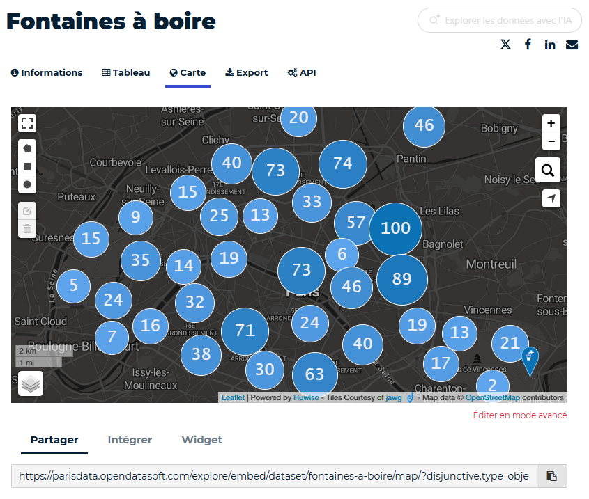
Matthew Salganik décrit une étude sur la pauvreté au Rwanda utilisant des logs mobiles comme un test de Rorschach (Salganik 2019) :
Ils ont tous raison. Ce cours vise à vous donner toutes ces perspectives.
Message clé
Les traces numériques peuvent servir à estimer la pauvreté et la richesse d’une population à grande échelle, en temps quasi réel, à partir de données déjà existantes.
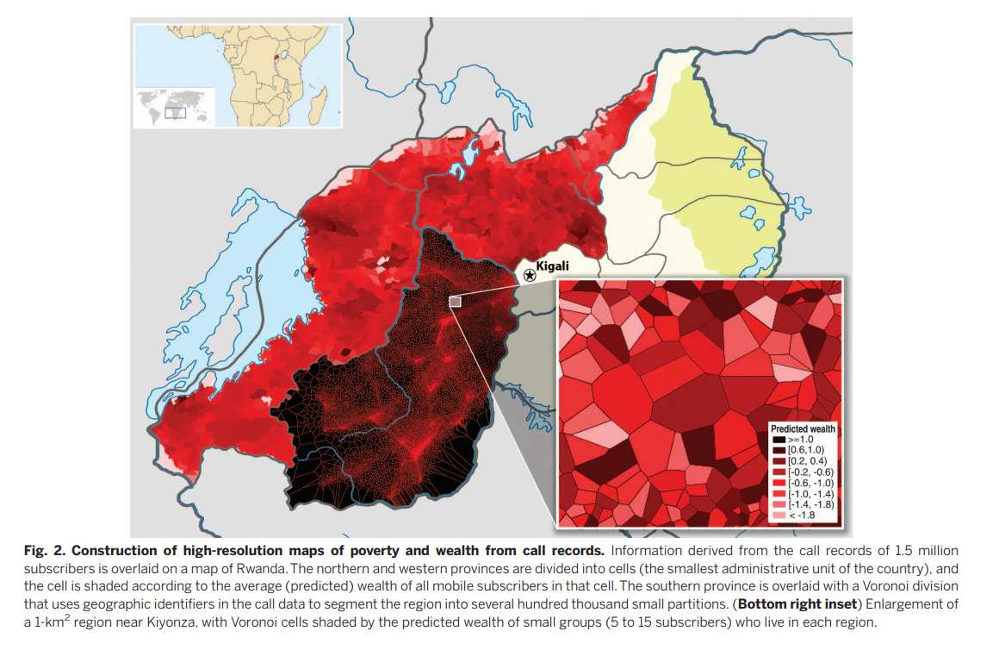
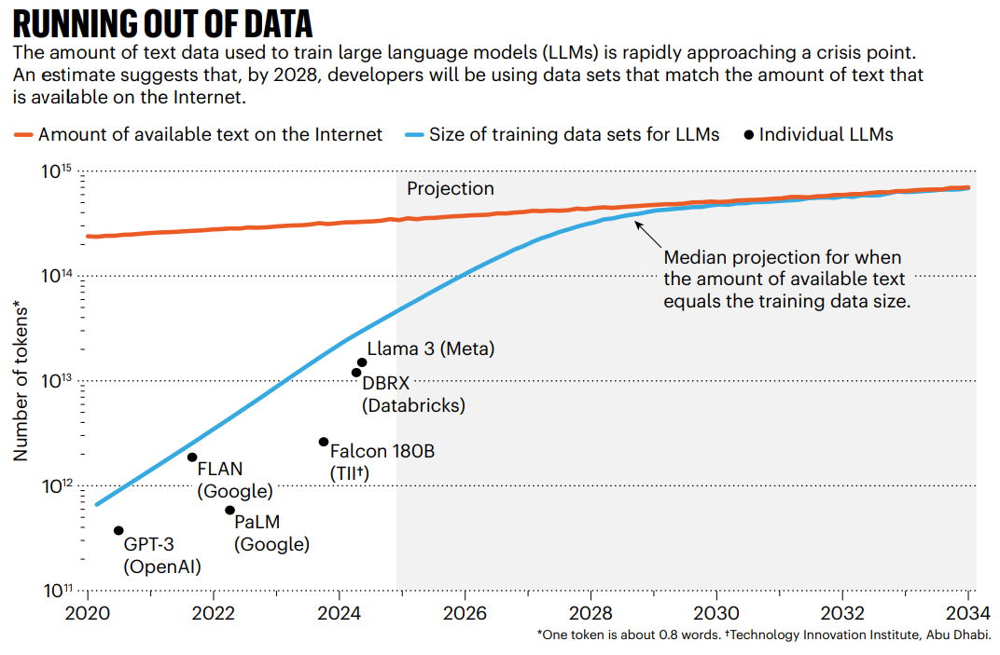
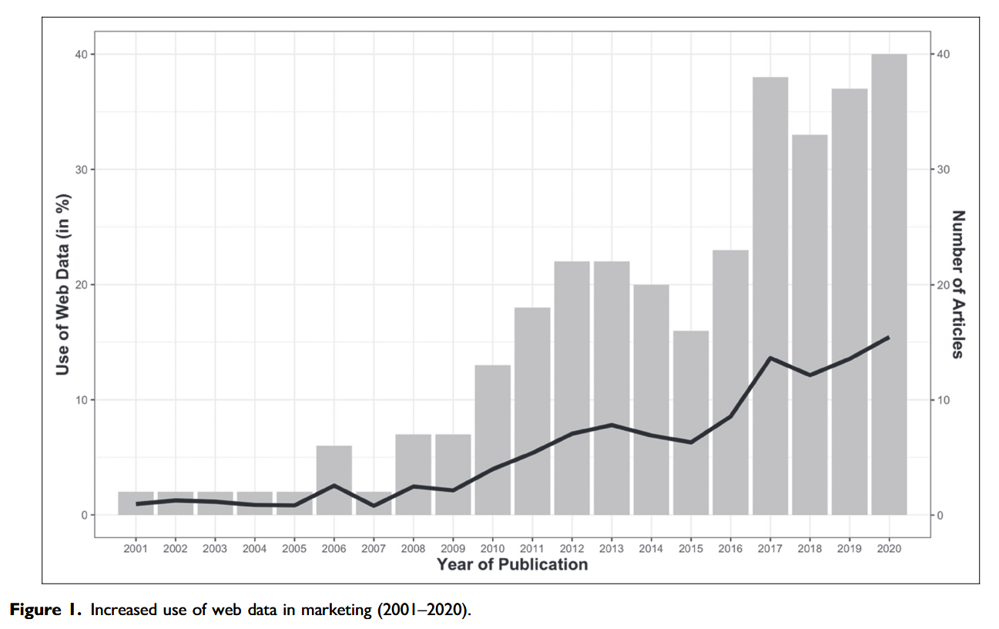
| Voie | Objectif principal | Exemples d’études |
|---|---|---|
| 1. Étudier de nouveaux phénomènes | Explorer de nouveaux comportements ou marchés. | Toubia & Stephen (2013) : motivations de contribution ; Chevalier & Mayzlin (2006) : impact des avis en ligne. |
| 2. Accroître la validité écologique | Observer des comportements réels hors labo. | Sridhar & Srinivasan (2012) ; Wu & Cosguner (2020) : effets “decoy”. |
| 3. Favoriser l’avancée méthodologique | Développer de nouvelles méthodes d’analyse. | Netzer et al. (2012) ; Tirunillai & Tellis (2012) : données UGC pour prédire performances boursières. |
| 4. Améliorer la mesure | Construire de nouvelles métriques ou instruments. | Huang et al. (2016) ; Datta et al. (2022) : saisonnalité à partir de 14 pays × 11 ans. |
Résumé
Les données web ne servent pas qu’à mesurer : elles ouvrent de nouveaux objets, augmentent la validité, font progresser la méthode et raffinent la mesure.
Les sources de Big Data présentent dix caractéristiques majeures (Salganik 2019).
Elles ne sont PAS conçues pour la recherche.
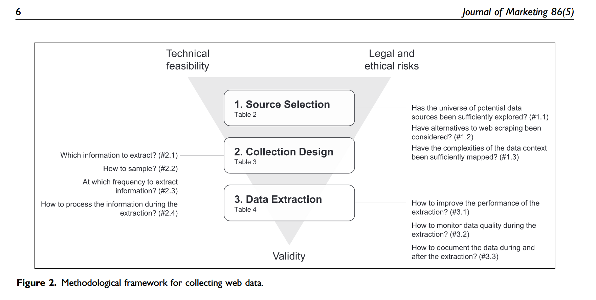
Partie 2 : Business (Web) Intelligence (BI)
Malgré son usage historique, le terme “Web Intelligence” n’est plus vraiment dominant dans les publications récentes ni dans les intitulés de poste.
On lui préfère aujourd’hui des notions plus précises comme Data Science, Analytics, ou Social Media Intelligence voire Computational Social Science
L’industrie impose les mots-clés : les grandes plateformes (Google, Meta, Adobe, SAP, etc.) diffusent leur vocabulaire via leurs outils et certifications.
→ Ex. Google Analytics, Adobe Digital Intelligence, SAP Web Intelligence.
Le terme “Web Intelligence” persiste surtout dans le monde académique ou lié à SAP,
mais n’est presque plus utilisé comme intitulé de poste.
Les appellations actuelles parlent plutôt de :
→ Data / Business Analytics, Data Science, Digital Marketing Analytics,
→ Product Analytics, Marketing Intelligence, Consumer Insights,
→ ou encore Digital Intelligence dans les grands groupes.
En bref : la terminologie suit les outils et les besoins métiers,
et “Web Intelligence” a été largement remplacée par un langage centré sur l’analyse de données au service de la décision et de la performance.
La BI n’est pas juste un outil, c’est un processus :
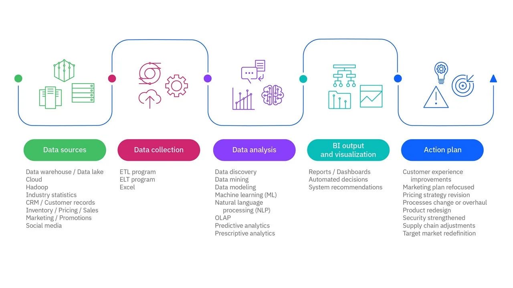
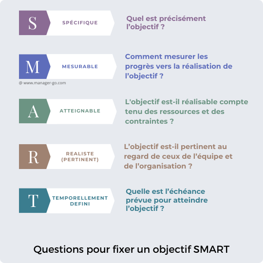
Augmenter les revenus issus du canal social du site web.
“Augmenter de 25 % les ventes en ligne provenant des réseaux sociaux d’ici la fin du trimestre.”
Deux grandes catégories de KPI :
Les KPI ne servent pas uniquement à mesurer la performance.
Ils traduisent aussi la stratégie marketing et la valeur perçue par l’utilisateur.Cette étude montre comment la recherche académique
contribue à distinguer les indicateurs pertinents des simples vanity metrics.
Définition : des métriques séduisantes mais peu informatives,
qui ne permettent pas de décision ou d’action stratégique.
Elles mesurent la visibilité plutôt que la valeur.
Exemples : nombre de téléchargements, vues ou abonnés sans analyse d’usage.
Selon (Menendez, Saura, and Sanchez 2020), la recherche distingue les indicateurs réellement explicatifs (engagement, rétention, conversion)
des mesures purement descriptives.
Un KPI doit refléter un comportement ou un résultat utile à la stratégie marketing.
| Vanity Metric (L’Ego) | Actionable Metric (La Stratégie) |
|---|---|
| Nombre total d’inscrits | Nombre d’utilisateurs actifs (MAU/WAU) |
| Nombre de vues de la page | Taux de conversion (Vue -> Achat) |
| Nombre de “J’aime” sur un post | Taux d’engagement (Clics / Partages) |
| Temps passé sur le site | Taux de rebond (Bounce Rate) |
| Nombre de téléchargements d’app | Taux de rétention (J1, J7, J30) |
Comment les clients nous trouvent-ils ?
Coût de la campagne / Nombre de clics(Coût / Impressions) * 1000(Clics / Impressions) * 100 (Taux de Clic)Coûts Marketing & Vente / Nouveaux ClientsLes clients font-ils ce qu’on attend d’eux ?
(Conversions / Visiteurs) * 100
Revenu Total / Nombre de Commandes(Paniers créés - Achats) / Paniers créésLes clients reviennent-ils ?
% de clients de la période N qui reviennent en N+1.(Clients perdus / Clients début de période) * 100
(Panier Moyen * Fréquence d'achat) * Durée de vie client
| KPI | Formule / Source | Objectif | Interprétation / Usage |
|---|---|---|---|
| CTR (Click-Through Rate) | (Clics / Impressions) × 100 |
Mesurer l’efficacité d’une campagne à générer du trafic. | Un CTR élevé indique que le message et le ciblage fonctionnent bien. |
| CPC (Cost Per Click) | Dépenses publicitaires / Nombre de clics |
Évaluer le coût d’acquisition de visiteurs. | Plus il est bas pour un même trafic qualifié, mieux c’est. |
| CAC (Customer Acquisition Cost) | Coûts Marketing & Vente / Nouveaux Clients |
Mesurer le coût d’obtention d’un nouveau client. | À comparer avec le CLV pour juger la rentabilité. |
| ROAS (Return On Ad Spend) | Revenus générés / Dépenses publicitaires |
Mesurer la rentabilité d’une campagne. | ROAS > 1 → campagne rentable. |
| Conversion Rate (CVR) | (Conversions / Visiteurs) × 100 |
Mesurer la capacité du site à transformer. | Indique la performance du tunnel de conversion. |
| AOV (Average Order Value) | Revenu total / Nombre de commandes |
Calculer la valeur moyenne d’un achat. | Sert à optimiser les ventes additionnelles ou cross-selling. |
| Retention Rate | (Clients revenant en N+1 / Clients en N) × 100 |
Mesurer la fidélité client. | Évalue la satisfaction et la valeur de long terme. |
| Churn Rate (Attrition) | (Clients perdus / Clients au début de la période) × 100 |
Suivre les pertes clients. | L’inverse de la rétention, indicateur de risque. |
| CLV (Customer Lifetime Value) | (Panier moyen × Fréquence d’achat) × Durée de vie client |
Mesurer la valeur totale d’un client. | CLV > CAC = business model sain. |
| Engagement Rate (Social Media) | (Interactions totales / Impressions) × 100 |
Mesurer la qualité des interactions sur les réseaux. | Indique la pertinence du contenu et la force de la communauté. |
Partie 3 : Trouver des données (démo)
client_id, movie_id)director_id)L’intérêt : éviter la redondance, garantir la cohérence, faciliter les jointures.
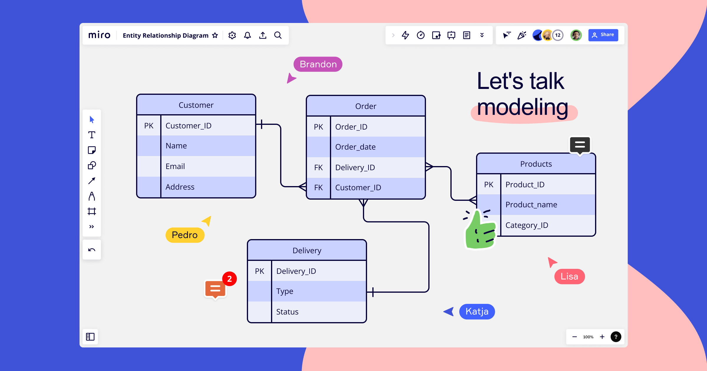
| Action | Commande | Exemple marketing | Objectif |
|---|---|---|---|
| Create | INSERT |
Ajouter un nouveau client | Enrichir la base |
| Read | SELECT |
Extraire les commandes de novembre | Analyser |
| Update | UPDATE |
Corriger un email client | Maintenir la qualité |
| Delete | DELETE |
Supprimer les doublons | Nettoyer les données |
En pratique, les analystes utilisent surtout SELECT, les opérations d’écriture étant réservées aux data engineers ou aux scripts ETL.
Une requête suit toujours la même logique séquentielle :
Exemple :
“Dans la table campagnes, sélectionne les campagnes Facebook de 2024, calcule le CTR moyen par pays, trie du plus fort au plus faible.”
| Type de requête | Objectif | Exemples |
|---|---|---|
| Descriptive | Observer ce qui s’est passé | “Combien de clics par canal ?” |
| Diagnostique | Comprendre pourquoi | “Pourquoi la conversion baisse ?” |
| Prédictive | Anticiper | “Quels clients vont racheter ?” |
| Prescriptive | Agir | “Quels segments relancer ?” |
Le SQL couvre les deux premières étapes ; les suivantes s’appuient sur les données qu’il extrait.
Moralité : savoir écrire une requête SQL, c’est savoir poser une bonne question aux données.
Prochaine étape : démo SQL en R sur la base IMDB (films & réalisateurs).